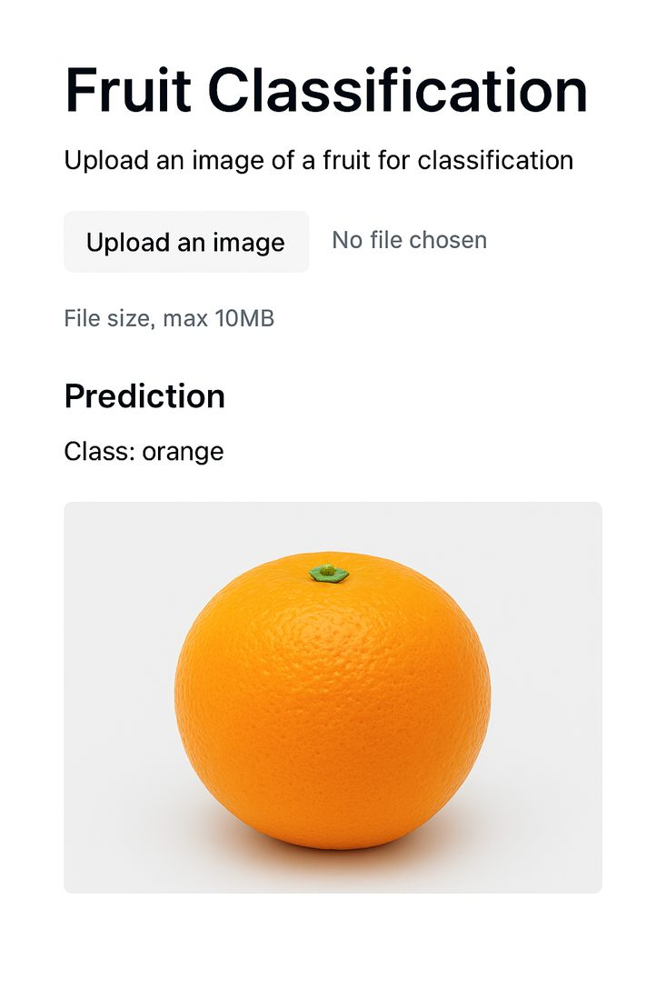
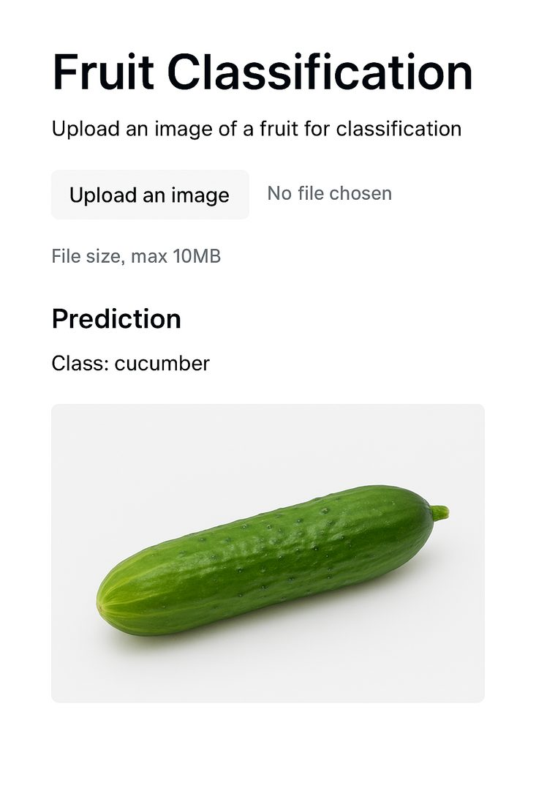

Fruit classification with transfer learning
A VGG16 model fine-tuned to classify fruit images accurately from a small dataset.
Overview
This project applies transfer learning with the pre-trained VGG16 network. It keeps the ImageNet features from the convolutional layers and trains only new top layers on a custom fruit dataset, which keeps data and computing needs low. It includes accuracy evaluation, loss curves and prediction checks on sample images.



Key features
- Transfer learning with VGG16
- Fine-tuned on a custom fruit dataset
- Prediction visualisation on test images
- Efficient classification of several fruit categories
Workflow
- Dataset preparation: load, resize and normalise the images.
- Transfer learning setup: freeze the VGG16 base layers.
- Fine-tuning: train new fully connected layers for the fruit classes.
- Evaluation: compute accuracy and plot loss curves.
- Prediction visualisation: display predictions on test images.
Sample code
from tensorflow.keras.applications import VGG16
from tensorflow.keras.models import Sequential
from tensorflow.keras.layers import Dense, Flatten
base_model = VGG16(weights='imagenet', include_top=False, input_shape=(224, 224, 3))
base_model.trainable = False # freeze convolutional layers
model = Sequential([
base_model,
Flatten(),
Dense(256, activation='relu'),
Dense(5, activation='softmax') # example: 5 fruit classes
])
model.compile(optimizer='adam', loss='categorical_crossentropy', metrics=['accuracy'])
Outcome
The model generalised well across fruit categories from a small dataset, which suits it to teaching and lightweight real-world use.